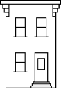

2014 American Community Survey data from the United States Census Bureau
Contemporary urban housing challenges involve finding affordable accommodations in desirable locations. Rent variations across short distances can be substantial. The following interactive map displays median rents organized by ZCTAs.
Key: less expensive more expensive
Michigan differs from other states in that top rents often occur in suburban centers rather than urban cores, affecting both Detroit and Grand Rapids. University towns show moderate rents, possibly constrained by student purchasing capacity.
The unemployment map reveals a correlation between lower rents and higher joblessness. The Upper Peninsula exhibits low rents alongside spotty employment, while Detroit and northeast Michigan follow similar patterns.